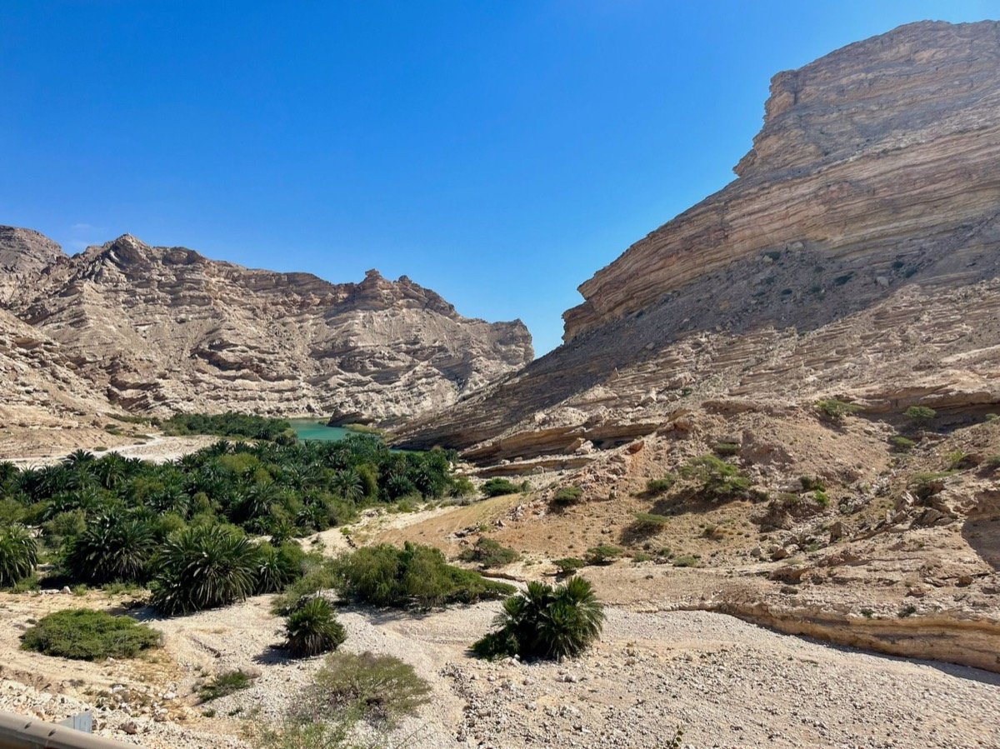

Wadi Shab: how to visit Oman's turquoise canyon
Getting there from Muscat, the boat crossing, the hike and swim, and what to bring.

What is Wadi Shab?
Wadi Shab is a canyon on Oman's eastern coast, between Muscat and Sur, known for its turquoise pools, palm groves and a cave with a waterfall at the end of the trail. It is one of the most visited wadis in the country, and one of the few where the main attraction is a swim.
How to get to Wadi Shab from Muscat
The wadi sits just off the coastal highway toward Sur, near the village of Tiwi. Expect roughly 1.5 to 2 hours by car from Muscat. You do not need a 4x4 to reach the parking area. There is no practical public transport, so most visitors come with a driver, a rental car or a guided trip, often combined with the Bimmah Sinkhole on the same road.
The boat crossing
The trail starts on the far side of a river that is too deep to wade across, so a small boat takes you over in a couple of minutes. It costs a small amount in cash. The boat operators will collect you again when you return to the landing point.
The hike and the swim
From the landing point, plan on a walk of around 45 minutes to an hour to reach the swimming section. It is a real hike rather than a stroll: you will cross shallow streams, climb over boulders and walk on rock that can be slippery. The first pools you pass are not the designated swimming area, so keep going until you reach the marked swimming section. The final stretch involves swimming through the canyon to the cave and waterfall.
What to bring
- Water shoes or trainers you are happy to get wet (not flip-flops)
- Swimwear, with modest clothing over it: Oman is a conservative country
- A dry bag for your phone, camera and valuables
- Drinking water and a snack: there are no facilities once you set off
- Cash for the boat
Best time to go
Go early in the morning for cooler temperatures and fewer people. The cooler months, roughly October to April, are the most comfortable for hiking in Oman; see our best time to visit Oman guide. Wadis can flood after heavy rain, so always check conditions before you go.
Visit Wadi Shab with Wadi Escape
Wadi Shab is part of our Oman Coast Explorer, alongside Bimmah Sinkhole and Sur, and of our Ultimate Oman Experience. We can also add it to any custom trip. Not sure how many days you need? Read how many days to spend in Oman.
Quick answers
Do I need a guide for Wadi Shab?
The trail is straightforward to follow because the canyon walls keep you on the path, but a local guide helps with timing, the boat crossing and combining Wadi Shab with nearby stops.
Can I swim at Wadi Shab?
Yes, but only in the designated swimming section further along the trail, not in the first pools you pass.
How long does it take to get from Muscat to Wadi Shab?
Roughly 1.5 to 2 hours by car along the coastal highway toward Sur.
Related guides
Want Wadi Shab in your Oman trip?
Tell us when you are travelling and we will build it into your itinerary.
Get Your Free Quote →